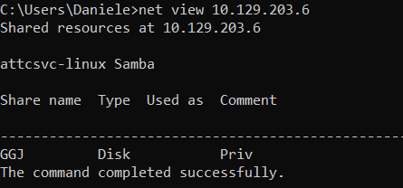

Windows Powershell
1.
net view: Check Available Shared Folders
2.
Get-ChildItem (gci): Show content of the shared folder
Get-ChildItem \\[address]\folder
3.
New-PSDrive: We can connect to a file share with the following command and map its content to the drive letter N
◇ anonymous authentication
New-PSDrive -Name "N" -Root "\\[address]\folder" -PSProvider "FileSystem"
◇ authenticate with user and password
$username = 'plaintext'
$password = 'Password123'
$secpassword = ConvertTo-SecureString $password -AsPlainText -Force
$cred = New-Object System.Management.Automation.PSCredential $username, $secpassword
New-PSDrive -Name "N" -Root "[address]\folder" -PSProvider "FileSystem" -Credential $cred
With the shared folder mapped as the n drive, we can execute Windows commands as if this shared folder is on our local computer.
4.
Get-ChildItem: find how many files the shared folder and its subdirectories contain the new created n drive
N:
N:\> (Get-ChildItem -File -Recurse | Measure-Object).Count
it this example only one file
5.
Get-ChildItem: To list all the files
Get-ChildItem -Recurse -Path N:\
6.
Get-ChildItem: To search for specific file
With `dir` we can search for specific names in files such as:
▪ cred
▪ password
▪ users
▪ secrets
▪ key
▪ Common File Extensions for source code such as: .cs, .c, .go, .java, .php, .asp, .aspx, .html.
◇ -Include
Get-ChildItem -Recurse -Path N:\ -Include *PATTERN* -File
◇ Select-String
Get-ChildItem -Recurse -Path N:\ | Select-String "PATTERN" -List